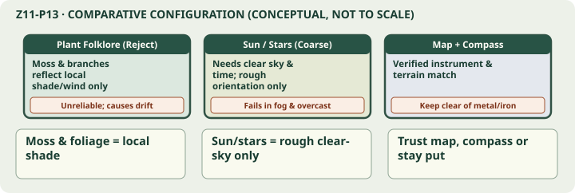

Z11-P13 · Navigation, weather and rescue · Adapted historical material
Reject unreliable nature-folklore direction clues in favor of instruments
Avoid false confidence from folklore sayings (moss, tree branches, anthills) that fail regularly in real forests.
When it applies · Disoriented or backcountry travel when tempted to guess direction from vegetation or casual environmental signs.
Equipment · Baseplate compass, paper map and calm position-uncertainty procedure.

Actions
- Reject folklore myths such as "moss grows on the north side of trees" or single-tree branch lean—local shade, dampness, slope aspect and wind shear control moss and growth far more than compass north.[N08, ED]
- Recognize that even real astronomical cues (sun arc or stars) require clear skies, accurate local time/season understanding and yield only coarse approximate orientation—not precise trail bearings.[N08, N07, ED]
- Rely on verified instruments (oriented paper map, metal-clear compass, verified offline GPS) paired with terrain features; when instruments and position fail together, stop and signal rather than guessing.[N08, T06, N09]
Failure recognition · Following mossy tree trunks through a shaded northern spruce bog in overcast fog and walking steadily deeper away from the road.[N08, N07, T06]
Verify · Confirm your direction comes from an inspected compass clear of metal or verified map-to-terrain landmarks—never from plant folklore.[N08, ED]
Stop or change course · If overcast skies, dead electronics and lack of a working compass leave direction unverified, stop moving, shelter and stay findable.[N08, T06, N09]
Evidence and editorial notes
- N07 · NWS · Fog Safety (current web edition)
- Section: Fog Safety > Visibility Loss and Travel Hazards · Conditions: Dense fog, valley mist, sea fog and blowing-snow whiteout
Support: Fog and whiteout collapse visual landmarks and depth perception rapidly, causing disorientation and unintentional terrain/traffic hazards; halt exposed travel early and rely on verified checkpoints or stay put.
Limitations: Compass bearings alone cannot reveal hidden cliffs, thin ice or drop-offs in zero visibility. · Conflicting evidence: Aligns with B014-P11 whiteout guidance.
Editorial note: Supports whiteout/fog stop thresholds and short-leg navigation boundaries. · Specialist reviewer: Meteorology and search and rescue
Primary source · checked 2026-11-24 - N08 · NOAA NCEI · Magnetic Declination (current web edition)
- Section: NOAA Magnetic Declination > definition and true-bearing conversion · Conditions: Using magnetic baseplate compasses near metal, electronics or iron-rich rock
Support: Declination is between true and magnetic north and varies by location and time. Grid convergence is separate. A device may already apply a correction.
Limitations: NOAA definition does not establish site-specific interference distances or diagnosis of magnetic anomalies. · Conflicting evidence: Aligns with B014-P13 and B014-P14.
Editorial note: Grounds declination conversion, metal-clearance and magnetic-anomaly cards. · Specialist reviewer: Navigation and geophysics safety
Primary source · checked 2026-11-24 - N09 · NPS · Outdoor Emergency Plan (current web edition)
- Section: If You Get Lost; Seek help · Conditions: Lost hiker who cannot safely retrace steps and has sought rescue
Support: Report last known location and landmarks. Stay put while awaiting help unless an immediate threat requires getting to safety.
Limitations: Navigation, signaling method and safe movement depend on site and responder instructions. · Conflicting evidence: See A02 claim audit for boundaries.
Editorial note: Core evidence for lost-person psychology, signaling and SAR coordination cards. · Specialist reviewer: Search and rescue
Primary source · checked 2026-11-24 - T06 · NPS · Outdoor Emergency Plan (current web edition)
- Section: If you get lost or hurt; call for help · Conditions: Outdoor US emergency
Support: Communicate location, last known point, situation and needs. Stay put when unable to establish a safe route unless immediate danger requires movement.
Limitations: Cell signal is unreliable in backcountry terrain; pre-trip plans bridge communication gaps. · Conflicting evidence: None; core lost-person decision rule.
Editorial note: Foundation for stay/signal/move and dispatch handoff cards. · Specialist reviewer: Search and rescue
Primary source · checked 2026-11-24
Source lineage · B014-P13 unreliable clues and NOAA declination; adapted historical material · Classification · Adapted historical material.